The moments of inertia are calculated using IA = Σimi(RAi)2, where i runs over all atoms in the system, mi is the mass of the atom in amu, and RAi is the distance from the axis of rotation, A, to atom i in Ångstroms.
The axes of rotation are calculated as follows:
First, a 3 by 3 matrix, t, is constructed, with the elements of t being:
t1,1 = Y2 + Z2 =
Σimi(yi2
+ zi2)
t1,2 = -X.Y = -Σimixiyi
t2,2 = X2 + Z2 =
Σimi(xi2
+ zi2)
t1,3 = -X.Z = -Σimixizi
t2,3 = -Y.Z = -Σimiyizi
t3,3 = X2 + Y2 =
Σimi(xi2
+ yi2)
where mi is the mass of the atom in amu, and xi, yi, and zi, are the Cartesian coordinates of the atoms, in Ångstroms. Then t is diagonalized. The resulting eigenvalues, (amu Ångstrom2), are divided by N.A2, where N=Avogardo's number and A = number of Ångstroms in a centimeter, to give the moments of inertia in g.cm2. Because a useful unit is 10-40.g.cm2, the moments of inertia are multiplied by 1040 before being printed. The eigenvectors associated with the eigenvalues are the axes of rotation, A, B, and C.
Useful conversion factors
1 g cm2 =
1.660540x10-40 (amu Ångstrom2)
Rotational constants in cm-1:
A = hN1016/(8π2c)/(amu Ångstrom2)
A (in MHz) =
5.053791x105/(amu Ångstrom2)
A (in cm-1) = 5.053791x105/c(amu Ångstrom2) =
16.85763/(amu Ångstrom2)
Ab initio MO methods provide total energies, Eeq, as the sum of electronic and nuclear-nuclear repulsion energies for molecules, isolated in vacuum, without vibration at 0 K.

From the 0 K potential surface and using the harmonic oscillator approximation, we can calculate the vibrational frequencies, νi, of the normal modes of vibration. Using these, we can calculate vibrational, rotational and translational contributions to the thermodynamic quantities such as the partition function and heat capacity which arise from heating the system from 0 to T K.
Q: partition function, E: energy, S: entropy,
and C: Heat capacity at constant pressure = Cp. In ab initio
calculations, the heat capacity calculated is Cv.
The relationship between Cp and Cv (in cal.degree-1.mol-1) is:
The vibrational contribution to the internal energy arises from population of the vibrational energy levels. The vibrational partition coefficient, Qvib, is given by:
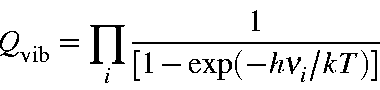
Evib, for a molecule at the temperature T as:

where h is Planck's constant, νi the i-th normal vibration frequency, and k the Boltzmann constant. For 1 mole of molecules, Evib should be multiplied by the Avogadro number Na = R/k. Thus:
|
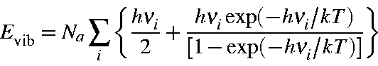
Equation 1 |
Note that the first term in the above equation is the zero-point vibration energy, Ezpe. Hence, the second term is the additional vibrational contribution due to the temperature increase from 0 K to T K. Namely,
| Evib | = | Ezpe+ Evib (T) | |
| Ezpe | = | 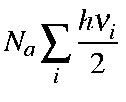 | |
| Evib(T) | = |
 |
Equation 2 |
The value of
Evib from GAUSSIAN 82 and 86
includes
Ezpe as defined by Equation 1
and Equation 2.
|
Svib |
= |
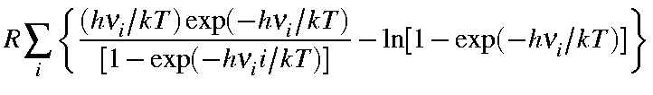 |
| Cvib | = |  |
At temperature T>0 K, a molecule rotates about the x, y, and z-axes and translates in x, y, and z-directions. By assuming the equipartition of energy, energies for rotation and translation, Erot and Etr, are calculated.
Σ is the symmetry number (Examples of
symmetry numbers are shown in the Table). I is moment of inertia. IA,
IB, and IC are moments of
inertia about A, B, and C axes.
| C1 | CI | CS: | 1 | D2 | D2d | D2h: | 4 | C |
1 | ||
| C2 | C2v | C2h: | 2 | D3 | D3d | D3h: | 6 | D
|
2 | ||
| C3 | C3v | C3h: | 3 | D4 | D4d | D4h: | 8 | T, Th Td: | 12 | ||
| C4 | C4v | C4h: | 4 | D5 | D5d | D5h: | 10 | O, Oh: | 24 | ||
| C5 | C5v | C5h: | 5 | D6 | D6d | D6h: | 12 | I, Ih: | 60 | ||
| C6 | C6v | C6h: | 6 | D7 | D7d | D7h: | 14 | S4: | 2 | ||
| C7 | C7v | C7h: | 7 | D8 | D8d | D8h: | 16 | S6: | 3 | ||
| C8 | C8v | C8h: | 8 | S8: | 4 |
Values for Qrot, Erot, and Srot for a linear molecule are defined below:
| Qro | = | 
| ||
| Ero | = | 2/2)RT | ||
| Srot | = | 
| ||
| = | 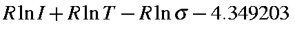 |
where
 .
.

Values for Qrot, Erot, and Srot
for a non-linear molecule are defined below:
| Qrot | = | 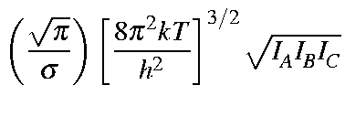 |
| = | 
| |
| Erot | = | (3/2)RT |
| Srot | = | 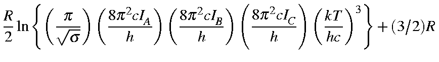 |
| = |
Here, -5.386 3921 is calculated as:


Given that M is the molecular weight, then the values for Qtra,
Etra, Stra, and Ctra
for a molecule are as defined below:
or Htra = (5/2)RT due to the PV term (cf. H = U + PV). The internal energy U at T is:
U = Eeq + [Evib + Erot + Etra]
or, in terms of the zero point energy, Ezpe, and real vibrations, Evib (T),
U = Eeq + [(Ezpe + Evib (T))+ Erot + Etra].
Enthalpy H for one mole of gas is defined as
Assumption of an ideal gas (i.e., PV = RT) leads to
H = U + PV = U + RT
Thus, Gibbs free energy G can be calculated as:
G = H - T S
It should be noted that M.O. parameters for MNDO, AM1, etc., are optimized so as to reproduce the experimental heat of formation (i.e., standard enthalpy of formation or the enthalpy change to form a mole of compound at 25oC from its elements in their standard state) as well as observed geometries (mostly at 25oC), and not to reproduce the Eeq and equilibrium geometry at 0 K.
In this sense, ESCF (defined as Heat of formation, ΔHf), force constants, normal vibration frequencies, etc. are all related to the values at 25oC, not to 0 K. Therefore, the E0 calculated in FORCE is not the true E0. Its use as E0 should be made at your own risk, bearing in mind the situation discussed above.
Since ESCF is standard enthalpy of formation (at 25 C):
C):
ESCF = Eeq + Ezpe + Evib+ Erot + Etra + PV + Σ[-Eelec(atom) + ΔHf(atom)].
Eeq: Electronic plus nuclear energy for the equilibrium geometry at 0 K; Ezpe: Zero-point energy; Evib: Vibrational energy at 298.15 K; Erot: Rotational energy at 298.15 K; Etra: Translational energy at 298.15 K.
To avoid the complication arising from the definition of ESCF, within the thermodynamics calculation the Standard Enthalpy of Formation, ΔH, is calculated by
ΔH = ESCF + (HT - H298).
Here, ESCF is the heat of formation (at 25oC) given in the output list, and HT and H298 are the enthalpy contributions for the increase of the temperature from 0 K to T and 298.15, respectively. In other words, the enthalpy of formation is corrected for the difference in temperature from 298.15 K to T.
There is a problem in that HT is the heat of formation at T relative to the heat of formation of the elements in their standard state at 298K. This involves mixing standard and not standard terms. There is no easy way to get the correct value for HT, but for rough work HT is useful. For more correct work, calculate ΔH for the elements in their standard state at T, and use these ΔH's to get the ΔH for the compound you're working with (or use tables from the literature).
This problem is, however, not normally important, because the most common use of HT is for calculating the thermodynamics of reactions at temperatures other than 298K. For all reactions, the types and number of atoms must be the same in reactants and products, therefore the fact that the HT are relative to the elements in their standard state at 298K is irrelevant. Consider the simple Diels-Alder reaction:
C2H4 + C4H6 = C6H10
The heat of this reaction at 298K is H298( C6H10) - H298(C2H4) - H298( C4H6). At any other temperature, the heat of reaction would be:
HR = HT( C6H10) - HT(C2H4) - HT( C4H6).
Care must, however, be taken to account for changes in volume - if any of the reactants or products are gaseous, then appropriate corrections must be made to HR . Complications arise only if absolute heats of formation are needed. Thus, if the heat of formation of benzoic acid (C7H6O2) at 398K (100C) is needed, the H398(C7H6O2) generated by MOPAC would be for the reaction:
7H298(graphite) + 3H298(H2) + H298(O2) => H398(C7H6O2)
0 + 0 + 0 =>H398(C7H6O2)
Note that on the left side, the temperatures are 298K. For H2 and O2, the heats of formation at 398K can readily be calculated, but for graphite the calculation is more complicated. The easiest way to generate a balanced equation would be to use tables of heats of formation of the elements at non-standard temperatures.
Finally, as mentioned above, changes in volume must also be taken into account: if the reaction volume changes, then RΔN(T-298) must be added or subtracted, where R is the gas constant (~ 2cals/degree/mol), and ΔN is the change in volume. Thus for the formation of methane from graphite and hydrogen, 2 volumes of reactant (H2 + graphite) yield 1 volume of methane, therefore ΔN = 1.
The method of calculation for T and H298 will be given below.
In MOPAC, the variables defined below are used:

The wavenumber,  , in cm-1:
, in cm-1:
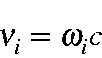

The rotational constants A, B, and C in cm-1:

Energy and Enthalpy in cal/mol, and Entropy in cal/mol/K. Thus, the earlier Equations can be written as follows:
|
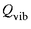 |
= |
|
|
Ezpe |
= |
|
|
|
= |
|
| = | 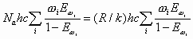 | |
|
|
= |
 |
|
|
= |
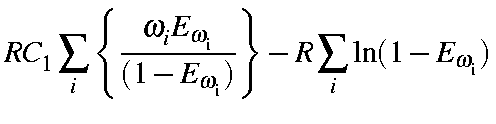 |
|
|
= |

|
|
|
= |

|
Rotation:
|
|
= |
|
|
|
= |
(2/2)RT |
|
|
= |
 |
|
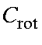 |
= |
(2/2)R |
|
|
= |
![$displaystyle frac{1}{sigma}left[frac{pi}{(A B C C_1^3)}right]^{1/2}$](img1640.gif) |
|
|
= |
(3/2)RT |
|
|
= |
 |
|
|
= |
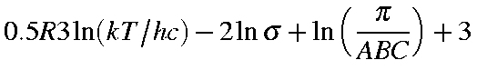 |
|
|
= |
|
|
|
= |
(3/2)R |
|
|
= |
 |
|
|
= |
(3/2)RT |
|
|
= |
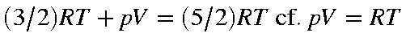 |
|
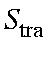 |
= |
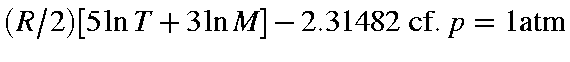 |
|
|
= |
|
In MOPAC:
(Note:
 is
not included in
is
not included in
 ;
;
 is
not derived from force-constants at 0 K) and for T:
is
not derived from force-constants at 0 K) and for T:
HT = [Hvib + Hrot + Htra]
while for T=298.15 K:
H298 = [Hvib + Hrot + Htra]
Note that HT (and H298) is equivalent to:
(Evib-Ezpe) + Erot + (Etra+ pV)
except that the normal frequencies are those obtained from force constants at
25 C, or at least not
at 0 K.
C, or at least not
at 0 K.
Thus, Standard Enthalpy of Formation, ΔH, can be calculated using U and H and Escf, thus:
ΔH = ESCF + (HT - H298)
Note that
 is
already counted in Escf.
is
already counted in Escf.
By using
|
H = U + pV = U + RT |
Standard Internal Energy of Formation, 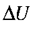, can be calculated as:
|
|
Standard Gibbs Free-Energy of Formation, 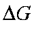, can be calculated by taking the difference from that for the isomer or that at different temperature:
Taking the difference is necessary to cancel the unknown values of standard entropy of formation for the constituent elements.